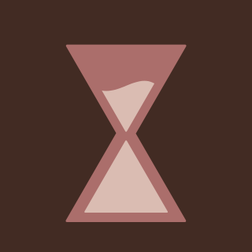

GoWeby
GoWeby
GoHealthy
GoWeby GoHealth adalah website yang menyediakan berbagai informasi, tips, dan inspirasi seputar kesehatan.
Mulai dari pola hidup sehat, perawatan tubuh, hingga edukasi tentang kebersihan dan kesejahteraan sehari-hari,
semua disajikan secara ringan dan mudah dipahami.
Website ini hadir untuk membantu siapa saja menjalani hidup yang lebih sehat dengan cara yang sederhana namun efektif.
OUR LOGO

Hello, saya aka menampilkan sebuah lirik lagu yang berjudul Linger by The Cranberries
Logo Go Weby menggabungkan bentuk huruf “W” dan jam pasir yang melambangkan konsistensi dalam menjaga kesehatan.
Warna hijau dipilih untuk mencerminkan kesehatan, keseimbangan, dan energi positif.
Secara keseluruhan, logo ini menggambarkan bahwa kesehatan dibangun melalui kebiasaan baik yang dilakukan secara konsisten dari waktu ke waktu, sejalan dengan slogan “Go Weby, Go Healthy.”
01 / Content Writer
Carrisa Cahya Malva Hudori
Lahir di Kuwait, 23 Mei 2009. Seorang content writer bertugas membuat berbagai jenis tulisan seperti artikel, caption media sosial, deskripsi produk, hingga teks untuk website atau aplikasi. Tidak hanya sekadar menulis, tetapi juga harus mampu menyusun kata-kata yang menarik, jelas, dan mudah dipahami oleh pembaca.
02 / Web Programmer
Eshan Abdillah Darutomo
Lahir di Lampung, 25 Juli 2009. Apps programmer bertanggung jawab dalam membuat dan mengembangkan aplikasi, baik untuk perangkat mobile maupun desktop. Tugas utamanya adalah menulis kode program agar aplikasi dapat berjalan sesuai fungsi yang diinginkan. Selain itu, ia juga harus melakukan pengecekan terhadap error atau bug, lalu memperbaikinya agar aplikasi tetap stabil.
03 / Content Producer
Naila Zivanna
Lahir di Jakarta, 17 Januari 2010. Web programmer bertugas membuat dan mengembangkan website agar dapat digunakan dengan baik oleh pengguna. Pekerjaannya meliputi pembuatan tampilan website (frontend) agar terlihat menarik, serta pengelolaan sistem di bagian belakang (backend) agar semua fitur dapat berjalan dengan lancar.
04 / Graphic Designer
Nabila Petir Latipah
Lahir di Jakarta, 17 Maret 2010. Graphic designer bertugas membuat berbagai desain visual seperti logo, poster, banner, hingga tampilan antarmuka (UI) pada aplikasi atau website. Dalam pekerjaannya, ia harus mampu menggabungkan warna, bentuk, dan elemen visual lainnya agar menghasilkan desain yang menarik dan indah.
Pink and Green Playful Creative Portfolio Presentation oleh Naila Zivanna